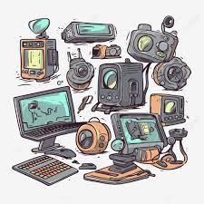
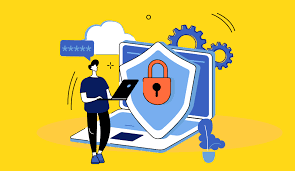

Tecnologia y Cyberseguridad
En la actualidad, vivimos rodeados de tecnología.
Desde Celulares, Consolas, hasta las computadoras,
todo a nuestro alrededor está conectado. Tener algo tecnologico trae nuevos estudios y herramientas. Uno de los más importantes es la ciberseguridad.
¿Que es la tecnología?
La tecnología son todas las herramientas y conocimientos que usamos para hacer nuestra vida más fácil.
Está en todas partes: en los celulares, en los computadores, en los autos, e incluso en los electrodomésticos.

¿Qué es la Ciberseguridad?
La ciberseguridad es todo lo que hacemos para protegernos cuando usamos internet.
Sirve para cuidar nuestra información personal, como nuestras contraseñas o fotos, y evitar que personas desconocidas accedan a ellas.

Consejos para cuidarse en internet
- No digas tus contraseñas a nadie.
- Elige contraseñas difíciles y diferentes para cada cuenta.
- No abras correos de personas que no conoces.
- Actualiza tus programas y antivirus para estar protegido.
Pasos para estar seguro en línea
- Piensa antes de hacer clic en un enlace.
- Revisa que la página web sea segura (que tenga el candado).
- No compartas información personal en redes sociales.
- Habla con un adulto si algo raro pasa en internet.
¿Por qué es importante aprender esto?
Porque cada vez usamos más la tecnología, y saber cómo cuidarnos en internet nos ayuda a estar más seguros.
Además, podemos ayudar a otras personas a protegerse también.